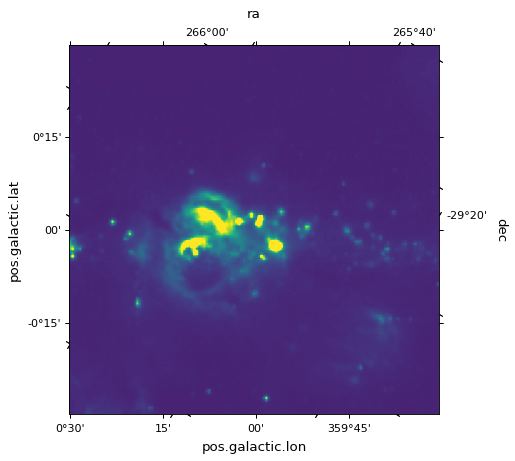
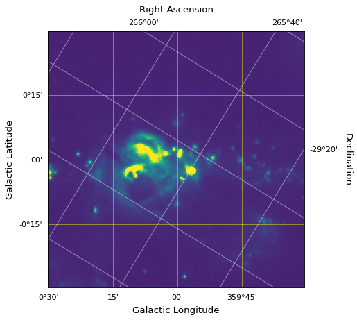

Overlaying coordinate systems¶
For the example in the following page we start from the example introduced in Initializing axes with world coordinates.
The coordinates shown by default in a plot will be those derived from the WCS
or transformation passed to the WCSAxes class.
However, it is possible to overlay different coordinate systems using the
get_coords_overlay() method:
overlay = ax.get_coords_overlay('fk5')
{kind=link}
{kind=link}

The object returned is a CoordinatesMap, the
same type of object as ax.coord. It can therefore be used in the same way
as ax.coord to set the ticks, tick labels, and axis labels properties:
ax.coords['glon'].set_ticks(color='white')
ax.coords['glat'].set_ticks(color='white')
ax.coords['glon'].set_axislabel('Galactic Longitude')
ax.coords['glat'].set_axislabel('Galactic Latitude')
ax.coords.grid(color='yellow', linestyle='solid', alpha=0.5)
overlay['ra'].set_ticks(color='white')
overlay['dec'].set_ticks(color='white')
overlay['ra'].set_axislabel('Right Ascension')
overlay['dec'].set_axislabel('Declination')
overlay.grid(color='white', linestyle='solid', alpha=0.5)
{kind=link}
{kind=link}
